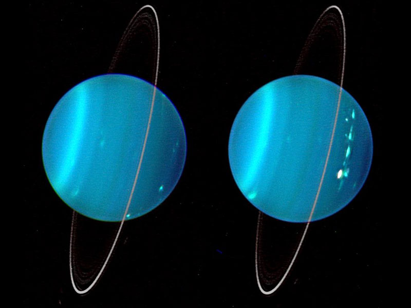

Uranus is the seventh planet from the Sun. Its name is a reference to the Greek god of the sky, Uranus, who, according to Greek mythology,
was the great-grandfather of Ares (Mars), grandfather of Zeus (Jupiter) and father of Cronus (Saturn). It has the third-largest planetary radius
and fourth-largest planetary mass in the Solar System. Uranus is similar in composition to Neptune, and both have bulk chemical compositions which
differ from that of the larger gas giants Jupiter and Saturn. For this reason, scientists often classify Uranus and Neptune as "ice giants" to distinguish
them from the other giant planets. Uranus's atmosphere is similar to Jupiter's and Saturn's in its primary composition of hydrogen and helium, but it contains
more "ices" such as water, ammonia, and methane, along with traces of other hydrocarbons. It has the coldest planetary atmosphere in the Solar System, with
a minimum temperature of 49 K (−224 °C; −371 °F), and has a complex, layered cloud structure with water thought to make up the lowest clouds and methane the
uppermost layer of clouds. The interior of Uranus is mainly composed of ices and rock.
1 / 4

2 / 4
3 / 4
4 / 4
Like the other giant planets, Uranus has a ring system, a magnetosphere, and numerous moons. The Uranian
system has a unique configuration because its axis of rotation is tilted sideways, nearly into the plane of
its solar orbit. Its north and south poles, therefore, lie where most other planets have their equators.
In 1986, images from Voyager 2 showed Uranus as an almost featureless planet in visible light, without the cloud bands
or storms associated with the other giant planets. Voyager 2 remains the only spacecraft to visit the planet.
Observations from Earth have shown seasonal change and increased weather activity as Uranus approached its equinox in
2007. Wind speeds can reach 250 metres per second (900 km/h; 560 mph).
Orbit and rotation
Uranus orbits the Sun once every 84 years, taking an average of seven years to pass through each of the dozen constellations of the zodiac.
In 2033, the planet will have made its third complete orbit around the Sun since being discovered in 1781. The planet has returned to the point
of its discovery northeast of Zeta Tauri twice since then, in 1862 and 1943, one day later each time as the precession of the equinoxes has shifted
it 1° west every 72 years. Uranus will return to this location again in 2030–31. Its average distance from the Sun is roughly 20 AU (3 billion km;
2 billion mi). The difference between its minimum and maximum distance from the Sun is 1.8 AU, larger than that of any other planet, though not as
large as that of dwarf planet Pluto. The intensity of sunlight varies inversely with the square of distance, and so on Uranus (at about 20 times
the distance from the Sun compared to Earth) it is about 1/400 the intensity of light on Earth.
The orbital elements of Uranus were first calculated in 1783 by Pierre-Simon Laplace. With time, discrepancies began to appear
between the predicted and observed orbits, and in 1841, John Couch Adams first proposed that the differences might be due to the gravitational
tug of an unseen planet. In 1845, Urbain Le Verrier began his own independent research into Uranus's orbit. On 23 September 1846, Johann Gottfried
Galle located a new planet, later named Neptune, at nearly the position predicted by Le Verrier.
The rotational period of the interior of Uranus is 17 hours, 14 minutes. As on all the giant planets, its upper atmosphere experiences
strong winds in the direction of rotation. At some latitudes, such as about 60 degrees south, visible features of the atmosphere move much
faster, making a full rotation in as little as 14 hours.
Axial tilt
The Uranian axis of rotation is approximately parallel with the plane of the Solar System, with an axial tilt of 97.77°
(as defined by prograde rotation). This gives it seasonal changes completely unlike those of the other planets. Near the solstice,
one pole faces the Sun continuously and the other faces away. Only a narrow strip around the equator experiences a rapid day–night
cycle, but with the Sun low over the horizon. At the other side of Uranus's orbit the orientation of the poles towards the Sun is reversed.
Each pole gets around 42 years of continuous sunlight, followed by 42 years of darkness. Near the time of the equinoxes, the Sun faces
the equator of Uranus giving a period of day–night cycles similar to those seen on most of the other planets.
Uranus reached its most recent equinox on 7 December 2007.
One result of this axis orientation is that, averaged over the Uranian year, the polar regions of Uranus receive
a greater energy input from the Sun than its equatorial regions. Nevertheless, Uranus is hotter at its equator than
at its poles. The underlying mechanism that causes this is unknown. The reason for Uranus's unusual axial tilt is also not known
with certainty, but the usual speculation is that during the formation of the Solar System, an Earth-sized protoplanet collided with Uranus,
causing the skewed orientation. Research by Jacob Kegerreis of Durham University suggests that the tilt resulted from a rock larger than
the Earth crashing into the planet 3 to 4 billion years ago. Uranus's south pole was pointed almost directly at the Sun at the time of
Voyager 2's flyby in 1986. The labelling of this pole as "south" uses the definition currently endorsed by the International Astronomical
Union, namely that the north pole of a planet or satellite is the pole that points above the invariable plane of the Solar System, regardless
of the direction the planet is spinning. A different convention is sometimes used, in which a body's north and south poles are defined
according to the right-hand rule in relation to the direction of rotation.
Visibility
The mean apparent magnitude of Uranus is 5.68 with a standard deviation of 0.17, while the extremes are 5.38 and 6.03. This range of
brightness is near the limit of naked eye visibility. Much of the variability is dependent upon the planetary latitudes being illuminated
from the Sun and viewed from the Earth. Its angular diameter is between 3.4 and 3.7 arcseconds, compared with 16 to 20 arcseconds for
Saturn and 32 to 45 arcseconds for Jupiter. At opposition, Uranus is visible to the naked eye in dark skies, and becomes an easy target
even in urban conditions with binoculars. In larger amateur telescopes with an objective diameter of between 15 and 23 cm, Uranus appears
as a pale cyan disk with distinct limb darkening. With a large telescope of 25 cm or wider, cloud patterns, as well as some of the larger
satellites, such as Titania and Oberon, may be visible.
Physical characteristics
Internal structure
Uranus's mass is roughly 14.5 times that of Earth, making it the least massive of the giant planets. Its diameter is slightly
larger than Neptune's at roughly four times that of Earth. A resulting density of 1.27 g/cm3 makes Uranus the second least dense
planet, after Saturn. This value indicates that it is made primarily of various ices, such as water, ammonia, and methane.
The total mass of ice in Uranus's interior is not precisely known, because different figures emerge depending on the model chosen;
it must be between 9.3 and 13.5 Earth masses. Hydrogen and helium constitute only a small part of the total, with between 0.5 and
1.5 Earth masses. The remainder of the non-ice mass (0.5 to 3.7 Earth masses) is accounted for by rocky material.
The standard model of Uranus's structure is that it consists of three layers: a rocky (silicate/iron–nickel) core in the centre,
an icy mantle in the middle and an outer gaseous hydrogen/helium envelope. The core is relatively small, with a mass of only
0.55 Earth masses and a radius less than 20% of Uranus'; the mantle comprises its bulk, with around 13.4 Earth masses, and the upper
atmosphere is relatively insubstantial, weighing about 0.5 Earth masses and extending for the last 20% of Uranus's radius.
Uranus's core density is around 9 g/cm3, with a pressure in the centre of 8 million bars (800 GPa) and a temperature of about 5000 K.
The ice mantle is not in fact composed of ice in the conventional sense, but of a hot and dense fluid consisting of water,
ammonia and other volatiles. This fluid, which has a high electrical conductivity, is sometimes called a water–ammonia ocean.
The extreme pressure and temperature deep within Uranus may break up the methane molecules, with the carbon atoms condensing into
crystals of diamond that rain down through the mantle like hailstones. Very-high-pressure experiments at the Lawrence Livermore
National Laboratory suggest that the base of the mantle may comprise an ocean of metallic liquid carbon, perhaps with floating solid
'diamond-bergs'. Scientists also believe that rainfalls of solid diamonds occur on Uranus, as well as on Jupiter, Saturn, and Neptune.
The bulk compositions of Uranus and Neptune are different from those of Jupiter and Saturn, with ice dominating over gases, hence
justifying their separate classification as ice giants. There may be a layer of ionic water where the water molecules break down into
a soup of hydrogen and oxygen ions, and deeper down superionic water in which the oxygen crystallises but the hydrogen ions move freely
within the oxygen lattice.
Although the model considered above is reasonably standard, it is not unique; other models also satisfy observations. For instance,
if substantial amounts of hydrogen and rocky material are mixed in the ice mantle, the total mass of ices in the interior will be lower
, and, correspondingly, the total mass of rocks and hydrogen will be higher. Presently available data does not allow a scientific
determination of which model is correct. The fluid interior structure of Uranus means that it has no solid surface. The gaseous
atmosphere gradually transitions into the internal liquid layers. For the sake of convenience, a revolving oblate spheroid set
at the point at which atmospheric pressure equals 1 bar (100 kPa) is conditionally designated as a "surface". It has equatorial and
polar radii of 25,559 ± 4 km (15,881.6 ± 2.5 mi) and 24,973 ± 20 km (15,518 ± 12 mi), respectively. This surface is used throughout
this article as a zero point for altitudes.
Internal heat
Uranus's internal heat appears markedly lower than that of the other giant planets; in astronomical terms, it has a low thermal
flux. Why Uranus's internal temperature is so low is still not understood. Neptune, which is Uranus's near twin in size and
composition, radiates 2.61 times as much energy into space as it receives from the Sun, but Uranus radiates hardly any excess
heat at all. The total power radiated by Uranus in the far infrared (i.e. heat) part of the spectrum is 1.06±0.08 times the solar
energy absorbed in its atmosphere. Uranus's heat flux is only 0.042±0.047 W/m2, which is lower than the internal heat flux
of Earth of about 0.075 W/m2. The lowest temperature recorded in Uranus's tropopause is 49 K (−224.2 °C; −371.5 °F), making Uranus
the coldest planet in the Solar System.
One of the hypotheses for this discrepancy suggests that when Uranus was hit by a supermassive impactor, which caused it to expel
most of its primordial heat, it was left with a depleted core temperature. This impact hypothesis is also used in some attempts
to explain the planet's axial tilt. Another hypothesis is that some form of barrier exists in Uranus's upper layers that prevents the
core's heat from reaching the surface. For example, convection may take place in a set of compositionally different layers, which
may inhibit the upward heat transport; perhaps double diffusive convection is a limiting factor.
In a recent study, the ice giants' interior conditions were mimicked by compressing water containing minerals like olivine and
ferropericlase. It showed that much magnesium could be dissolved in the liquid interiors of Uranus and Neptune. A thermal insulation
layer made of dissolved magnesium in Uranus due to a larger quantity in Uranus than Neptune was proposed as a possible explanation of
Uranus's low temperature.
Atmosphere
Although there is no well-defined solid surface within Uranus's interior, the outermost part of Uranus's gaseous envelope that
is accessible to remote sensing is called its atmosphere. Remote-sensing capability extends down to roughly 300 km below the
1 bar (100 kPa) level, with a corresponding pressure around 100 bar (10 MPa) and temperature of 320 K (47 °C; 116 °F). The
tenuous thermosphere extends over two planetary radii from the nominal surface, which is defined to lie at a pressure of 1 bar.
The Uranian atmosphere can be divided into three layers: the troposphere, between altitudes of −300 and 50 km (−186 and 31 mi) and
pressures from 100 to 0.1 bar (10 MPa to 10 kPa); the stratosphere, spanning altitudes between 50 and 4,000 km (31 and 2,485 mi) and
pressures of between 0.1 and 10−10 bar (10 kPa to 10 µPa); and the thermosphere extending from 4,000 km to as high as 50,000 km from
the surface. There is no mesosphere.
Composition
The composition of Uranus's atmosphere is different from its bulk, consisting mainly of molecular hydrogen and helium.
The helium molar fraction, i.e. the number of helium atoms per molecule of gas, is 0.15±0.03 in the upper troposphere, which
corresponds to a mass fraction 0.26±0.05. This value is close to the protosolar helium mass fraction of 0.275±0.01, indicating
that helium has not settled in its centre as it has in the gas giants. The third-most-abundant component of Uranus's atmosphere is methane (CH4).
Methane has prominent absorption bands in the visible and near-infrared (IR), making Uranus aquamarine or cyan in colour. Methane molecules
account for 2.3% of the atmosphere by molar fraction below the methane cloud deck at the pressure level of 1.3 bar (130 kPa); this represents
about 20 to 30 times the carbon abundance found in the Sun. The mixing ratio is much lower in the upper atmosphere due to its
extremely low temperature, which lowers the saturation level and causes excess methane to freeze out. The abundances of less volatile
compounds such as ammonia, water, and hydrogen sulfide in the deep atmosphere are poorly known. They are probably also higher than solar
values. Along with methane, trace amounts of various hydrocarbons are found in the stratosphere of Uranus, which are thought to
be produced from methane by photolysis induced by the solar ultraviolet (UV) radiation. They include ethane (C2H6), acetylene (C2H2),
methylacetylene (CH3C2H), and diacetylene (C2HC2H). Spectroscopy has also uncovered traces of water vapour, carbon monoxide
and carbon dioxide in the upper atmosphere, which can only originate from an external source such as infalling dust and comets.
Troposphere
The troposphere is the lowest and densest part of the atmosphere and is characterised by a decrease in temperature with altitude.
The temperature falls from about 320 K (47 °C; 116 °F) at the base of the nominal troposphere at −300 km to 53 K (−220 °C; −364 °F) at
50 km. The temperatures in the coldest upper region of the troposphere (the tropopause) actually vary in the range between 49
and 57 K (−224 and −216 °C; −371 and −357 °F) depending on planetary latitude. The tropopause region is responsible for the vast
majority of Uranus's thermal far infrared emissions, thus determining its effective temperature of 59.1 ± 0.3 K (−214.1 ± 0.3 °C; −353.3 ± 0.5 °F).
The troposphere is thought to have a highly complex cloud structure; water clouds are hypothesised to lie in the pressure range of 50
to 100 bar (5 to 10 MPa), ammonium hydrosulfide clouds in the range of 20 to 40 bar (2 to 4 MPa), ammonia or hydrogen sulfide clouds at
between 3 and 10 bar (0.3 and 1 MPa) and finally directly detected thin methane clouds at 1 to 2 bar (0.1 to 0.2 MPa).
The troposphere is a dynamic part of the atmosphere, exhibiting strong winds, bright clouds and seasonal changes.
Upper atmosphere
The middle layer of the Uranian atmosphere is the stratosphere, where temperature generally increases with altitude from 53 K (−220 °C; −364 °F)
in the tropopause to between 800 and 850 K (527 and 577 °C; 980 and 1,070 °F) at the base of the thermosphere. The heating of the stratosphere
is caused by absorption of solar UV and IR radiation by methane and other hydrocarbons, which form in this part of the atmosphere as a result
of methane photolysis. Heat is also conducted from the hot thermosphere. The hydrocarbons occupy a relatively narrow layer at altitudes of
between 100 and 300 km corresponding to a pressure range of 1000 to 10 Pa and temperatures of between 75 and 170 K (−198 and −103 °C; −325 and −154 °F)
. The most abundant hydrocarbons are methane, acetylene and ethane with mixing ratios of around 10−7 relative to hydrogen.
The mixing ratio of carbon monoxide is similar at these altitudes. Heavier hydrocarbons and carbon dioxide have mixing
ratios three orders of magnitude lower. The abundance ratio of water is around 7×10−9. Ethane and acetylene tend to condense
in the colder lower part of stratosphere and tropopause (below 10 mBar level) forming haze layers, which may be partly responsible
for the bland appearance of Uranus. The concentration of hydrocarbons in the Uranian stratosphere above the haze is significantly lower
than in the stratospheres of the other giant planets.
The outermost layer of the Uranian atmosphere is the thermosphere and corona, which has a uniform temperature around 800 to 850 K.
The heat sources necessary to sustain such a high level are not understood, as neither the solar UV nor the auroral activity
can provide the necessary energy to maintain these temperatures. The weak cooling efficiency due to the lack of hydrocarbons in the
stratosphere above 0.1 mBar pressure level may contribute too. In addition to molecular hydrogen, the thermosphere-corona contains
many free hydrogen atoms. Their small mass and high temperatures explain why the corona extends as far as 50,000 km (31,000 mi), or two
Uranian radii, from its surface. This extended corona is a unique feature of Uranus. Its effects include a drag on small
particles orbiting Uranus, causing a general depletion of dust in the Uranian rings. The Uranian thermosphere, together with the upper
part of the stratosphere, corresponds to the ionosphere of Uranus. Observations show that the ionosphere occupies altitudes from 2,000
to 10,000 km (1,200 to 6,200 mi). The Uranian ionosphere is denser than that of either Saturn or Neptune, which may arise from the low
concentration of hydrocarbons in the stratosphere. The ionosphere is mainly sustained by solar UV radiation and its density depends
on the solar activity. Auroral activity is insignificant as compared to Jupiter and Saturn.
Magnetosphere
Before the arrival of Voyager 2, no measurements of the Uranian magnetosphere had been taken, so its nature remained a
mystery. Before 1986, scientists had expected the magnetic field of Uranus to be in line with the solar wind, because it
would then align with Uranus's poles that lie in the ecliptic.
Voyager's observations revealed that Uranus's magnetic field is peculiar, both because it does not originate from its geometric centre,
and because it is tilted at 59° from the axis of rotation. In fact the magnetic dipole is shifted from Uranus's centre towards
the south rotational pole by as much as one third of the planetary radius. This unusual geometry results in a highly asymmetric magnetosphere,
where the magnetic field strength on the surface in the southern hemisphere can be as low as 0.1 gauss (10 µT), whereas in the northern hemisphere
it can be as high as 1.1 gauss (110 µT). The average field at the surface is 0.23 gauss (23 µT). Studies of Voyager 2 data in 2017 suggest
that this asymmetry causes Uranus's magnetosphere to connect with the solar wind once a Uranian day, opening the planet to the Sun's particles.
In comparison, the magnetic field of Earth is roughly as strong at either pole, and its "magnetic equator" is roughly parallel with its geographical
equator. The dipole moment of Uranus is 50 times that of Earth. Neptune has a similarly displaced and tilted magnetic field, suggesting
that this may be a common feature of ice giants. One hypothesis is that, unlike the magnetic fields of the terrestrial and gas giants, which are
generated within their cores, the ice giants' magnetic fields are generated by motion at relatively shallow depths, for instance, in the
water–ammonia ocean. Another possible explanation for the magnetosphere's alignment is that there are oceans of liquid diamond
in Uranus's interior that would deter the magnetic field.
Despite its curious alignment, in other respects the Uranian magnetosphere is like those of other planets: it has a bow shock at about
23 Uranian radii ahead of it, a magnetopause at 18 Uranian radii, a fully developed magnetotail, and radiation belts. Overall,
the structure of Uranus's magnetosphere is different from Jupiter's and more similar to Saturn's. Uranus's magnetotail trails behind
it into space for millions of kilometres and is twisted by its sideways rotation into a long corkscrew.
Uranus's magnetosphere contains charged particles: mainly protons and electrons, with a small amount of H2+ ions. Many of
these particles probably derive from the thermosphere. The ion and electron energies can be as high as 4 and 1.2 megaelectronvolts,
respectively. The density of low-energy (below 1 kiloelectronvolt) ions in the inner magnetosphere is about 2 cm−3. The particle
population is strongly affected by the Uranian moons, which sweep through the magnetosphere, leaving noticeable gaps. The particle
flux is high enough to cause darkening or space weathering of their surfaces on an astronomically rapid timescale of 100,000 years.
This may be the cause of the uniformly dark colouration of the Uranian satellites and rings. Uranus has relatively well developed aurorae,
which are seen as bright arcs around both magnetic poles. Unlike Jupiter's, Uranus's aurorae seem to be insignificant for the energy balance
of the planetary thermosphere.
In March 2020, NASA astronomers reported the detection of a large atmospheric magnetic bubble, also known as a plasmoid, released into
outer space from the planet Uranus, after reevaluating old data recorded by the Voyager 2 space probe during a flyby of the planet in 1986.
Climate
At ultraviolet and visible wavelengths, Uranus's atmosphere is bland in comparison to the other giant planets, even to Neptune,
which it otherwise closely resembles. When Voyager 2 flew by Uranus in 1986, it observed a total of ten cloud features across
the entire planet. One proposed explanation for this dearth of features is that Uranus's internal heat appears markedly
lower than that of the other giant planets. The lowest temperature recorded in Uranus's tropopause is 49 K (−224 °C; −371 °F), making
Uranus the coldest planet in the Solar System.
Banded structure, winds and clouds
In 1986, Voyager 2 found that the visible southern hemisphere of Uranus can be subdivided into two regions: a bright polar
cap and dark equatorial bands. Their boundary is located at about −45° of latitude. A narrow band straddling the latitudinal
range from −45 to −50° is the brightest large feature on its visible surface. It is called a southern "collar". The cap
and collar are thought to be a dense region of methane clouds located within the pressure range of 1.3 to 2 bar (see above).
Besides the large-scale banded structure, Voyager 2 observed ten small bright clouds, most lying several degrees to the north
from the collar. In all other respects Uranus looked like a dynamically dead planet in 1986. Voyager 2 arrived during the
height of Uranus's southern summer and could not observe the northern hemisphere. At the beginning of the 21st century, when
the northern polar region came into view, the Hubble Space Telescope (HST) and Keck telescope initially observed neither a collar
nor a polar cap in the northern hemisphere. So Uranus appeared to be asymmetric: bright near the south pole and uniformly
dark in the region north of the southern collar. In 2007, when Uranus passed its equinox, the southern collar almost disappeared,
and a faint northern collar emerged near 45° of latitude.
In the 1990s, the number of the observed bright cloud features grew considerably partly because new high-resolution imaging
techniques became available. Most were found in the northern hemisphere as it started to become visible. An early explanation—that
bright clouds are easier to identify in its dark part, whereas in the southern hemisphere the bright collar masks them – was shown to be
incorrect. Nevertheless, there are differences between the clouds of each hemisphere. The northern clouds are smaller, sharper
and brighter. They appear to lie at a higher altitude. The lifetime of clouds spans several orders of magnitude. Some small
clouds live for hours; at least one southern cloud may have persisted since the Voyager 2 flyby. Recent observation also discovered
that cloud features on Uranus have a lot in common with those on Neptune. For example, the dark spots common on Neptune had never been
observed on Uranus before 2006, when the first such feature dubbed Uranus Dark Spot was imaged. The speculation is that Uranus is becoming
more Neptune-like during its equinoctial season.
The tracking of numerous cloud features allowed determination of zonal winds blowing in the upper troposphere of Uranus. At
the equator winds are retrograde, which means that they blow in the reverse direction to the planetary rotation. Their speeds are
from −360 to −180 km/h (−220 to −110 mph). Wind speeds increase with the distance from the equator, reaching zero values
near ± 20° latitude, where the troposphere's temperature minimum is located. Closer to the poles, the winds shift to a
prograde direction, flowing with Uranus's rotation. Wind speeds continue to increase reaching maxima at ± 60° latitude before
falling to zero at the poles. Wind speeds at −40° latitude range from 540 to 720 km/h (340 to 450 mph). Because the collar
obscures all clouds below that parallel, speeds between it and the southern pole are impossible to measure. In contrast,
in the northern hemisphere maximum speeds as high as 860 km/h (540 mph) are observed near +50° latitude.
Seasonal variation
For a short period from March to May 2004, large clouds appeared in the Uranian atmosphere, giving it a Neptune-like appearance.
Observations included record-breaking wind speeds of 820 km/h (510 mph) and a persistent thunderstorm referred to as "Fourth of July fireworks".
On 23 August 2006, researchers at the Space Science Institute (Boulder, Colorado) and the University of Wisconsin observed a dark spot on Uranus's
surface, giving scientists more insight into Uranus atmospheric activity. Why this sudden upsurge in activity occurred is not fully known,
but it appears that Uranus's extreme axial tilt results in extreme seasonal variations in its weather. Determining the nature of this
seasonal variation is difficult because good data on Uranus's atmosphere have existed for less than 84 years, or one full Uranian year.
Photometry over the course of half a Uranian year (beginning in the 1950s) has shown regular variation in the brightness in two spectral
bands, with maxima occurring at the solstices and minima occurring at the equinoxes. A similar periodic variation, with maxima at the
solstices, has been noted in microwave measurements of the deep troposphere begun in the 1960s. Stratospheric temperature measurements
beginning in the 1970s also showed maximum values near the 1986 solstice. The majority of this variability is thought to occur owing to
changes in the viewing geometry.
There are some indications that physical seasonal changes are happening in Uranus. Although Uranus is known to have a bright south polar
region, the north pole is fairly dim, which is incompatible with the model of the seasonal change outlined above. During its previous
northern solstice in 1944, Uranus displayed elevated levels of brightness, which suggests that the north pole was not always so dim.
This information implies that the visible pole brightens some time before the solstice and darkens after the equinox. Detailed analysis
of the visible and microwave data revealed that the periodical changes of brightness are not completely symmetrical around the solstices,
which also indicates a change in the meridional albedo patterns. In the 1990s, as Uranus moved away from its solstice, Hubble and ground-based
telescopes revealed that the south polar cap darkened noticeably (except the southern collar, which remained bright), whereas the northern
hemisphere demonstrated increasing activity, such as cloud formations and stronger winds, bolstering expectations that it should brighten
soon. This indeed happened in 2007 when it passed an equinox: a faint northern polar collar arose, and the southern collar became nearly
invisible, although the zonal wind profile remained slightly asymmetric, with northern winds being somewhat slower than southern.
The mechanism of these physical changes is still not clear. Near the summer and winter solstices, Uranus's hemispheres lie alternately
either in full glare of the Sun's rays or facing deep space. The brightening of the sunlit hemisphere is thought to result from the local
thickening of the methane clouds and haze layers located in the troposphere. The bright collar at −45° latitude is also connected with
methane clouds. Other changes in the southern polar region can be explained by changes in the lower cloud layers. The variation of
the microwave emission from Uranus is probably caused by changes in the deep tropospheric circulation, because thick polar clouds and haze
may inhibit convection. Now that the spring and autumn equinoxes are arriving on Uranus, the dynamics are changing and convection can occur again.
Formation
It is argued that the differences between the ice giants and the gas giants arise from their formation history. The Solar System
is hypothesised to have formed from a rotating disk of gas and dust known as the presolar nebula. Much of the nebula's gas, primarily
hydrogen and helium, formed the Sun, and the dust grains collected together to form the first protoplanets. As the planets grew, some
of them eventually accreted enough matter for their gravity to hold on to the nebula's leftover gas. The more gas they
held onto, the larger they became; the larger they became, the more gas they held onto until a critical point was reached, and their
size began to increase exponentially. The ice giants, with only a few Earth masses of nebular gas, never reached that critical
point. Recent simulations of planetary migration have suggested that both ice giants formed closer to the Sun than their
present positions, and moved outwards after formation (the Nice model).
Moons
Uranus has 27 known natural satellites. The names of these satellites are chosen from characters in the works of Shakespeare and
Alexander Pope. The five main satellites are Miranda, Ariel, Umbriel, Titania, and Oberon. The Uranian satellite system is
the least massive among those of the giant planets; the combined mass of the five major satellites would be less than half that of Triton
(largest moon of Neptune) alone. The largest of Uranus's satellites, Titania, has a radius of only 788.9 km (490.2 mi), or less than
half that of the Moon, but slightly more than Rhea, the second-largest satellite of Saturn, making Titania the eighth-largest moon in the
Solar System. Uranus's satellites have relatively low albedos; ranging from 0.20 for Umbriel to 0.35 for Ariel (in green light). They
are ice–rock conglomerates composed of roughly 50% ice and 50% rock. The ice may include ammonia and carbon dioxide.
Among the Uranian satellites, Ariel appears to have the youngest surface, with the fewest impact craters, and Umbriel the oldest.
Miranda has fault canyons 20 km (12 mi) deep, terraced layers, and a chaotic variation in surface ages and features. Miranda's past
geologic activity is thought to have been driven by tidal heating at a time when its orbit was more eccentric than currently, probably as
a result of a former 3:1 orbital resonance with Umbriel. Extensional processes associated with upwelling diapirs are the likely origin
of Miranda's 'racetrack'-like coronae. Ariel is thought to have once been held in a 4:1 resonance with Titania.
Uranus has at least one horseshoe orbiter occupying the Sun–Uranus L3 Lagrangian point—a gravitationally unstable region at 180°
in its orbit, 83982 Crantor. Crantor moves inside Uranus's co-orbital region on a complex, temporary horseshoe orbit. 2010
EU65 is also a promising Uranus horseshoe librator candidate.
Seasonal variation
The Uranian rings are composed of extremely dark particles, which vary in size from micrometres to a fraction of a metre.
Thirteen distinct rings are presently known, the brightest being the ε ring. All except two rings of Uranus are extremely narrow –
they are usually a few kilometres wide. The rings are probably quite young; the dynamics considerations indicate that they did not
form with Uranus. The matter in the rings may once have been part of a moon (or moons) that was shattered by high-speed impacts.
From numerous pieces of debris that formed as a result of those impacts, only a few particles survived, in stable zones corresponding
to the locations of the present rings.
William Herschel described a possible ring around Uranus in 1789. This sighting is generally considered doubtful, because the rings are
quite faint, and in the two following centuries none were noted by other observers. Still, Herschel made an accurate description of the
epsilon ring's size, its angle relative to Earth, its red colour, and its apparent changes as Uranus travelled around the Sun.
The ring system was definitively discovered on 10 March 1977 by James L. Elliot, Edward W. Dunham, and Jessica Mink using the Kuiper
Airborne Observatory. The discovery was serendipitous; they planned to use the occultation of the star SAO 158687 (also known as HD 128598)
by Uranus to study its atmosphere. When their observations were analysed, they found that the star had disappeared briefly from view five
times both before and after it disappeared behind Uranus. They concluded that there must be a ring system around Uranus. Later they
detected four additional rings. The rings were directly imaged when Voyager 2 passed Uranus in 1986. Voyager 2 also discovered
two additional faint rings, bringing the total number to eleven.
In December 2005, the Hubble Space Telescope detected a pair of previously unknown rings. The largest is located twice as far from
Uranus as the previously known rings. These new rings are so far from Uranus that they are called the "outer" ring system. Hubble also
spotted two small satellites, one of which, Mab, shares its orbit with the outermost newly discovered ring. The new rings bring the total
number of Uranian rings to 13. In April 2006, images of the new rings from the Keck Observatory yielded the colours of the outer rings:
the outermost is blue and the other one red. One hypothesis concerning the outer ring's blue colour is that it is composed of
minute particles of water ice from the surface of Mab that are small enough to scatter blue light. In contrast, Uranus's inner
rings appear grey.
Exploration
In 1986, NASA's Voyager 2 interplanetary probe encountered Uranus. This flyby remains the only investigation of Uranus
carried out from a short distance and no other visits are planned. Launched in 1977, Voyager 2 made its closest approach
to Uranus on 24 January 1986, coming within 81,500 km (50,600 mi) of the cloudtops, before continuing its journey to Neptune.
The spacecraft studied the structure and chemical composition of Uranus's atmosphere, including its unique weather, caused
by its axial tilt of 97.77°. It made the first detailed investigations of its five largest moons and discovered 10 new ones.
Voyager 2 examined all nine of the system's known rings and discovered two more. It also studied the magnetic field,
its irregular structure, its tilt and its unique corkscrew magnetotail caused by Uranus's sideways orientation.
Voyager 1 was unable to visit Uranus because investigation of Saturn's moon Titan was considered a priority. This trajectory
took Voyager 1 out of the plane of the ecliptic, ending its planetary science mission.
The possibility of sending the Cassini spacecraft from Saturn to Uranus was evaluated during a mission extension planning phase
in 2009, but was ultimately rejected in favour of destroying it in the Saturnian atmosphere. It would have taken about twenty
years to get to the Uranian system after departing Saturn. A Uranus orbiter and probe was recommended by the 2013–2022
Planetary Science Decadal Survey published in 2011; the proposal envisages launch during 2020–2023 and a 13-year cruise to Uranus.
A Uranus entry probe could use Pioneer Venus Multiprobe heritage and descend to 1–5 atmospheres. The ESA evaluated a "medium-class"
mission called Uranus Pathfinder. A New Frontiers Uranus Orbiter has been evaluated and recommended in the study, The Case for a Uranus
Orbiter. Such a mission is aided by the ease with which a relatively big mass can be sent to the system—over 1500 kg with an Atlas 521
and 12-year journey. For more concepts see proposed Uranus missions.